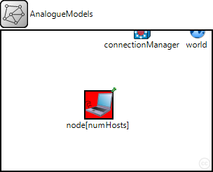
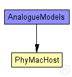
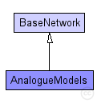

This documentation is released under the Creative Commons license
This documentation is released under the Creative Commons licenseThis example shows how to use AnalogueModels.
It contains the following modules/classes:
RandomFreqTimeModel: An AnalogueModel implementation which defines random attunation values in time and frequency using the MultiDimMapping.
RandomFrequencyOnlyModel: An AnalogueModel implementation which defines random attenuation values in the frequency domain by using the MultiDimMapping class. Since every mapping represented by the Mapping interface of MiXiM has to be defined over time this shows how to "simulate" mappings which arent't defined over time.
ThresholdDecider: A quick and dirty implementation of a very verbose Decider. It is only used for a better illustration of how the AnalogueModels affect the signal during runtime and shouldn't be used as a template for an actual Decider.
SamplePhyLayer: A PhyLayer subclass which knows how to initialize our own AnalogueModels and Decider.
SimpleMacLayer: A very basic implementation of a Mac layer without using the actual BaseMacLayer. This is only to keep the example independent from the BaseMacLayer, normally you whould just use the BaseMacLayer.
The network itself consists of only two host which keep ping-pong-ing messages between each other.
The simulation has the following run configurations:
See the comments in the source for more details.
The following diagram shows usage relationships between types. Unresolved types are missing from the diagram. Click here to see the full picture.
The following diagram shows inheritance relationships for this type. Unresolved types are missing from the diagram. Click here to see the full picture.
| Name | Type | Description |
|---|---|---|
| BaseNetwork | network | (no description) |
| Name | Type | Default value | Description |
|---|---|---|---|
| playgroundSizeX | double |
x size of the area the nodes are in (in meters) |
|
| playgroundSizeY | double |
y size of the area the nodes are in (in meters) |
|
| playgroundSizeZ | double |
z size of the area the nodes are in (in meters) |
|
| cmType | string | "org.mixim.base.connectionManager.ConnectionManager" |
connection manager to use |
| wuType | string | "org.mixim.base.modules.BaseWorldUtility" |
world utility to use |
| numHosts | int |
total number of hosts in the network |
| Name | Value | Description |
|---|---|---|
| isNetwork | ||
| display | bgb=$playgroundSizeX,$playgroundSizeY,white,,;bgp=10,50 |
| Name | Type | Default value | Description |
|---|---|---|---|
| connectionManager.coreDebug | bool |
debug switch for core framework |
|
| connectionManager.sendDirect | bool |
send directly to the node or create separate gates for every connection |
|
| connectionManager.pMax | double |
maximum sending power used for this network [mW] |
|
| connectionManager.sat | double |
minimum signal attenuation threshold [dBm] |
|
| connectionManager.alpha | double |
minimum path loss coefficient |
|
| connectionManager.carrierFrequency | double |
minimum carrier frequency of the channel [Hz] |
|
| world.useTorus | bool |
use the playground as torus? |
|
| node.netwl.stats | bool |
stats switch |
|
| node.netwl.headerLength | int |
length of the network packet header (in bits) |
|
| node.tranl.stats | bool |
stats switch |
|
| node.tranl.headerLength | int |
length of the network packet header (in bits) |
|
| node.sessl.stats | bool |
stats switch |
|
| node.sessl.headerLength | int |
length of the network packet header (in bits) |
|
| node.presl.stats | bool |
stats switch |
|
| node.presl.headerLength | int |
length of the network packet header (in bits) |
|
| node.appl.headerLength | int |
length of the application message header (in bits) |
// //This example shows how to use AnalogueModels. // //It contains the following modules/classes: // //RandomFreqTimeModel: //An AnalogueModel implementation which defines random attunation values //in time and frequency using the MultiDimMapping. // //RandomFrequencyOnlyModel: //An AnalogueModel implementation which defines random attenuation values //in the frequency domain by using the MultiDimMapping class. //Since every mapping represented by the Mapping interface of MiXiM has to be //defined over time this shows how to "simulate" mappings which arent't //defined over time. // //ThresholdDecider: //A quick and dirty implementation of a very verbose Decider. It is only //used for a better illustration of how the AnalogueModels affect the signal //during runtime and shouldn't be used as a template for an actual Decider. // //SamplePhyLayer: //A PhyLayer subclass which knows how to initialize our own AnalogueModels //and Decider. // //SimpleMacLayer: //A very basic implementation of a Mac layer without using the actual //BaseMacLayer. This is only to keep the example independent from the //BaseMacLayer, normally you whould just use the BaseMacLayer. // // //The network itself consists of only two host which keep ping-pong-ing //messages between each other. // //The simulation has the following run configurations: // //- "General" - infinite ping-pong-ing without simulation of propagation delay //- "WithPropDelay" - same with simulation of propagation delay //- "PerfTest" - meant to be used when called with CmdEnv for some performance // testing (time limited) // // //See the comments in the source for more details. // network AnalogueModels extends BaseNetwork { parameters: int numHosts; // total number of hosts in the network @display("bgb=$playgroundSizeX,$playgroundSizeY,white,,;bgp=10,50"); submodules: node[numHosts]: PhyMacHost { parameters: numHosts = numHosts; @display("p=139,106;b=42,42,rect,red;i=device/wifilaptop"); } }
This documentation is released under the Creative Commons license